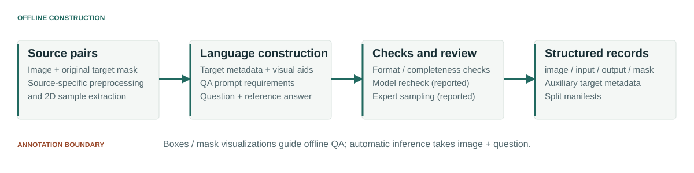
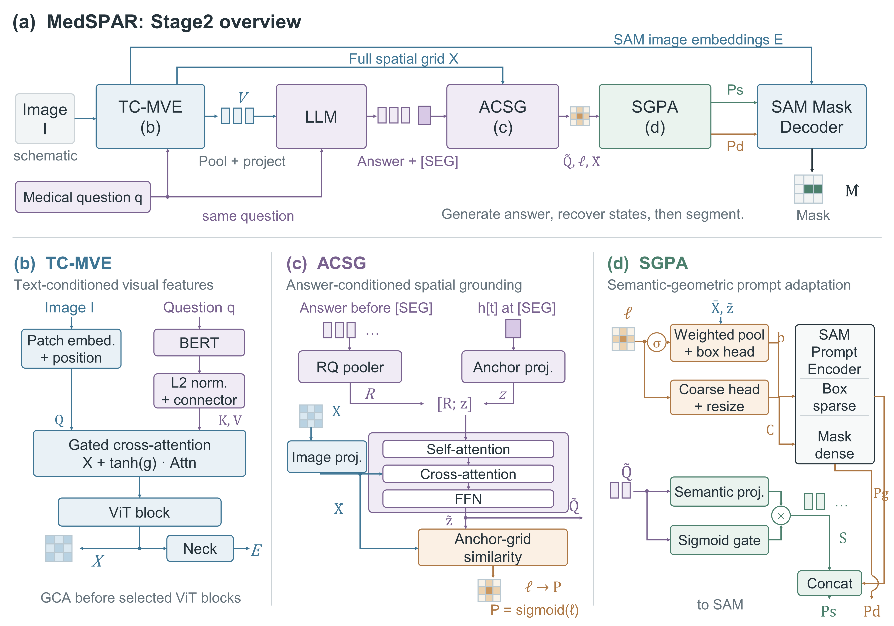

01
TC-MVE
Text-Conditioned Medical Visual Encoder
BERT text features pass through a connector into gated cross-attention before ViT blocks 2, 5, 6 and 11 (zero-based). Stage 1 trains Steer-MedSAM, including the decoder and auxiliary patch head.
2D medical image reasoning segmentation
Spatial Prompt Adaptation
for Medical Reasoning Segmentation
From a medical question to a target mask:
connecting answer representations with spatial visual features.
Language can describe which target to segment, while the mask must identify its precise spatial extent. MedSPAR studies the interface between generated answer representations, a spatial visual grid and a medical segmentation decoder.
The implemented method connects question-conditioned visual features to answer-conditioned grounding, then adapts the resulting geometric and semantic signals for SAM. Whether these paths improve localization is a question for controlled evaluation.
Scope: a single 2D image and question → generated answer and binary target mask. Implementation evidence does not establish clinical validity or comparative performance.
Existing segmentation annotations supply the target masks. Offline language construction adds a question and reference answer; annotation-derived visual aids are kept outside the automatic inference inputs.

Local JSON record inventory · recounted 2 November 2026
| Task group | Train | Validation | Test |
|---|---|---|---|
| BraTS | 3,902 | 488 | 488 |
| Breast | 3,816 | 477 | 474 |
| Kidney | 3,466 | 432 | 435 |
| Liver | 2,776 | 350 | 346 |
| Lung | 3,348 | 421 | 414 |
| Pancreas | 3,191 | 400 | 397 |
| Poly | 2,597 | 324 | 327 |
| Prostate | 3,027 | 374 | 381 |
| Skin | 3,335 | 398 | 461 |
| Thyroid | 2,303 | 576 | 614 |
| Total · 40,338 | 31,761 | 4,240 | 4,337 |
image + input provide the image and question. output + mask provide reference-answer and pixel supervision. Actual records also contain body_part, modality, target and target_position; these annotation fields are not inference inputs.
{
"image": "<relative image path>",
"input": "<question without [SEG]>",
"output": "<reference answer> [SEG]",
"mask": "<relative mask path>"
}Schema template only. No patient record or generated medical statement is displayed.
Three visual paths connect language and segmentation: a compressed LLM prefix, a full grid for grounding, and image embeddings that reach the mask decoder directly.

01
Text-Conditioned Medical Visual Encoder
BERT text features pass through a connector into gated cross-attention before ViT blocks 2, 5, 6 and 11 (zero-based). Stage 1 trains Steer-MedSAM, including the decoder and auxiliary patch head.
02
Answer-Conditioned Spatial Grounding
Answer states before [SEG] supply pooled queries. The state at [SEG] supplies an anchor. The query bank interacts with the full visual grid to produce spatial logits.
03
Semantic–Geometric Prompt Adaptation
Predicted boxes and coarse masks form geometric prompts. Projected, gated semantic tokens join sparse prompts, while direct image embeddings retain spatial information for decoding.
Image + question → free answer generation → exactly-one-SEG check → second LLM forward with cached visual features → automatic prompts → mask decoding. Missing or multiple SEG tokens are counted as failures.
Stage 0 · visual control. Plain MedSAM; original image encoder, prompt encoder and IoU head frozen, decoder segmentation parameters trained. This branch prepares medsam_vision.
Stage 1 · visual preparation. Same shared SAM freeze policy, plus trainable connector, GCA and patch head; BERT remains frozen. This prepares the complete Steer-MedSAM model for main.
Stage 2 · joint adaptation. Visual branch frozen by default; LoRA, full embedding/LM-head matrices, visual-prefix modules, ACSG/SGPA and decoder segmentation parameters train. Reference-answer teacher forcing is used in training.
These paths are implemented in the inspected source. Full model execution, checkpoint round trips and CUDA/DDP validation were not performed in this website task.
The evaluator scores native-resolution target masks and retains generation failures in the denominator. Current-model run provenance and the corrected data protocol must be established before publishing benchmark scores.
Implemented at native GT resolution
Invalid SEG cases score zero
GT-derived boxes versus automatic prompts
This space is reserved for current main and matched comparisons, with dataset version, checkpoint, decoding settings, per-record scores and aggregation stated. Legacy runs and explicitly simulated scores are excluded.
The eventual case study will align an authorized source image, its exact question, ground truth, a current-model prediction and overlay. Include a representative failure alongside successful cases.
Awaiting a verified checkpoint, same-record outputs and permission to display the source image. These labeled spaces contain no fabricated medical image or mask.
Public identifier and publication status pending.
Not linkedThe inspected source is separate from this workspace; source synchronization and package naming remain unresolved.
Release pendingSource-specific permissions, model identities and downloadable artifacts remain to be established.
Release pendingEvidence & maintenance plan Upstream MedSAM Upstream SAM
The static website runs from this workspace without research dependencies:
python -m http.server 8000 --directory docsOpen http://localhost:8000. Training and evaluation recipes are in the repository README, with explicit prerequisites. A normal source-launcher dry run failed on the MedSPAR / medspar package-name mismatch; no model-execution claim is made.
A verified MedSPAR BibTeX entry will appear here once the final title, authors and public paper identifier are confirmed. Drafting plans do not establish a submission or acceptance.
MedSPAR builds on SAM, MedSAM, BERT and LoRA-based language-model adaptation. Project-wide licensing is pending confirmation; upstream code, data and weights retain their respective terms.